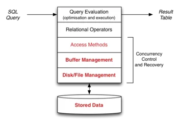

Module 9: Query Processing & Transactions · Lecture 39 · Week 14
Query Processing Pipeline
From SQL text to result set: parsing, binding, optimization, and execution
Learning Objectives
- Trace a SQL query through the full processing pipeline from parsing to output
- Explain what a query plan is and how the query optimizer chooses among alternative plans
- Describe three join algorithms: simple nested loop, block nested loop, and sort-merge join
- Estimate the I/O cost of a selection, projection, and join using the page-count cost model

1. The Query Processing Pipeline
When you submit a SQL query to a DBMS, it does not execute the SQL text directly. Instead, it passes through a multi-stage pipeline:
1.1 Parser
The parser checks SQL syntax against the grammar and produces a parse tree. At this stage, table and column names are just strings; no validation against the catalog is performed yet.
1.2 Binder (Semantic Analysis)
The binder resolves names against the system catalog (the metadata store that describes all tables, columns, indexes, views, and constraints). It checks that all referenced tables and columns exist, that types are compatible, and expands view definitions by substituting their underlying SQL.
1.3 Query Rewriter
The rewriter applies algebraic transformations to simplify the query before optimization. Key rewrites include:
- Predicate pushdown: move WHERE predicates as close to base tables as possible (reduces intermediate result sizes)
- Subquery decorrelation: convert correlated subqueries into joins where possible
- Projection pushdown: remove unnecessary columns early to reduce data flow
2. The Query Optimizer
The optimizer is the most complex component of a DBMS. Its job is to choose an efficient physical query plan from among many logically equivalent alternatives.
2.1 Search Space
The number of possible plans for a query with n tables grows exponentially: for n=10 tables there are over 17 million join orderings. Optimizers use:
- Heuristics: push down selections and projections first; prefer left-deep join trees
- Dynamic programming: build up optimal plans for subsets of tables (System R style)
- Cost estimation: use statistics (histogram of column values, table cardinality, index availability) to estimate I/O cost
2.2 Statistics and Cardinality Estimation
The optimizer uses catalog statistics to estimate the number of tuples that will pass each operator:
3. Physical Operators: Selections and Projections
3.1 Selection
| Access Method | I/O Cost | When Chosen |
|---|---|---|
| Heap scan (no index) | B | No index, or predicate selects >10% of tuples |
| Clustered B+ tree index | log_d(B) + pages_in_range | Equality or range on the clustered key |
| Unclustered B+ tree index | log_d(B) + matches | Equality on secondary key; high selectivity only |
| Hash index | ~1–2 pages | Equality only; hash index exists on column |
3.2 Projection
Projections can eliminate duplicate values (SQL SELECT DISTINCT). Duplicate elimination is implemented using either sorting (sort all projected tuples, scan for duplicates) or hashing (hash each projected tuple; within each bucket, check for duplicates). Sorting costs O(B log B); hashing costs O(B) on average.
4. Join Algorithms
Joins are typically the most expensive operations in a query. We compare three algorithms for the join R ⋈ S on a common attribute.
4.1 Simple Nested Loop Join (SNLJ)
For R = 1,000 pages, S = 10,000 pages, 100 tuples/page: cost = 1,000 + 100,000 × 10,000 = 1 billion I/Os. Only feasible for tiny tables.
4.2 Block Nested Loop Join (BNLJ)
With P = 100 buffer frames, B_R = 1,000, B_S = 10,000: cost = 1,000 + ⌈1,000/98⌉ × 10,000 = 1,000 + 11 × 10,000 = 111,000 I/Os. Sharply better than SNLJ.
4.3 Sort-Merge Join (SMJ)
Sort-merge join is excellent when the data can be sorted once and reused for multiple joins, or when the data is already sorted (e.g., from a clustered B+ tree scan).
4.4 Hash Join
Hash join is typically the fastest for equi-joins when enough buffer frames are available. It does not support inequality joins or range predicates on the join attribute.
5. Join Algorithm Comparison
| Algorithm | I/O Cost (example) | Best When | Limitation |
|---|---|---|---|
| Simple NLJ | ~1 billion | Both tiny (fit in memory) | Terrible on disk |
| Block NLJ | ~111,000 | Small buffer; no index | Requires small outer relation |
| Sort-Merge | ~55,000 | Data already sorted; range joins | Sort cost dominates |
| Hash Join | ~33,000 | Equi-joins; large tables | No range/inequality joins |
| Index NLJ | ~10,000 | Index on inner relation; outer is small | Requires index |
6. The Iterator (Volcano) Model
Physical query plans are executed using the iterator model (also called the Volcano or pipeline model). Each operator exposes three methods: open(), next(), and close(). The parent operator calls next() on its children to pull tuples one at a time, pipelining results without materializing large intermediate relations to disk.
7. Summary
- SQL passes through: parser → binder → rewriter → optimizer → executor
- The optimizer uses catalog statistics to estimate costs and chooses the lowest-cost physical plan
- Access methods: heap scan O(B), clustered index O(log B + range), hash O(1) equality only
- Join algorithms: BNLJ > Sort-Merge > Hash join in increasing efficiency for large equi-joins
- The iterator model pipelines tuples from leaf operators to the root without unnecessary materialization